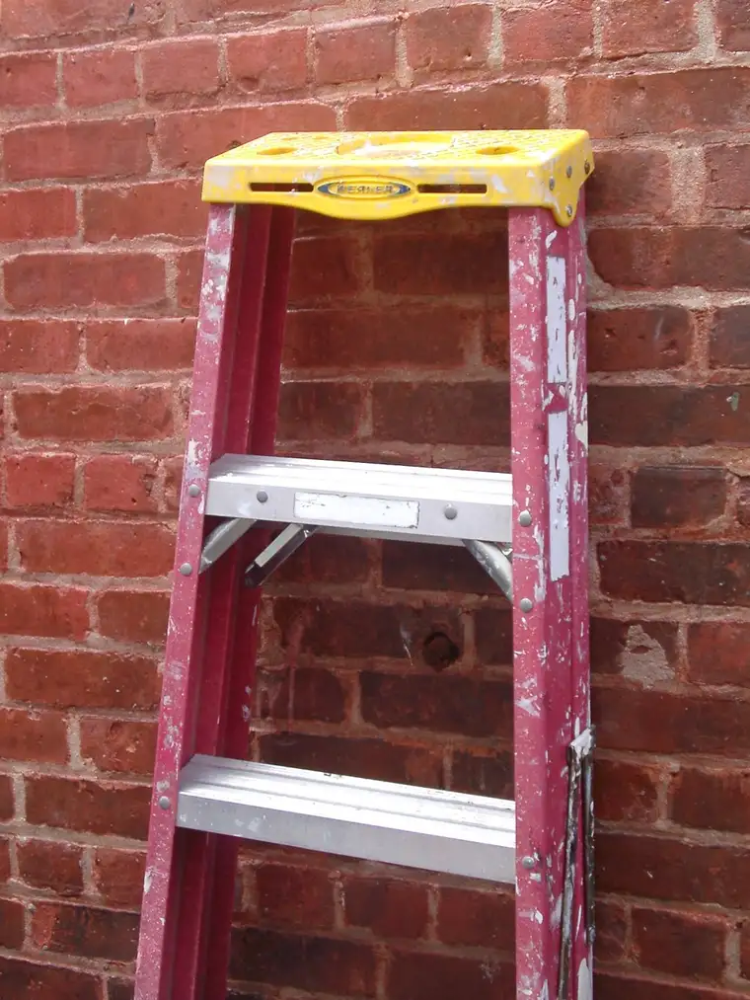

It’s funny how the mind works; how one thought leads to another and from there, another. And I’m amazed just how far these thoughts can progress on an ordinary morning drive to school.
What began with hearing a portion of a radio interview led to a much bigger thought: the reality that almost everything I do in terms of writing and ministry comes back to the desire to help others find something solid to lean against.

My reversion back to the Catholic Church — a church I’d never really left but, as a young adult, was not entirely convinced was where I wanted to settle — had everything to do with this yearning to find something solid to hold onto as the world around me swirled. And I think that’s the want of so many of us, and why those of us who are thoughtful Christians are struggling so mightily this election season. Where is the steady, solid thing that we can know for sure?
Well, it’s right in front of us, of course. We find it in the one who brought us into being, and who is the alpha and omega. With absolute assurance, we can count on God and God alone can we count on.
But if you don’t mind, I’d like to go back to the radio interview for a bit, because there’s more to share here.
I hadn’t even had my coffee yet when I turned up the volume and listened to the portion of EWTN’s The Sonrise Morning Show that started sparks flying through my brain.
The focus was a new book, “Particles of Faith: A Catholic Guide to Navigating Science.” The author, Stacy Trasancos, is a scientist, teacher, and convert. I know nothing about her conversion story, except that science was what led her to faith.
Now I might not get this verbatim because I was driving at the time of hearing it, but I’m going to share the gist of what she shared in the interview. Her relent to faith, she explained, happened after asking the questions that all scientists do. “Why does this happen, why does that happen?” A scientist is driven on an inexhaustible search to get at how this world is put together, but at some point, all scientists confront the scary reality of what’s behind it all.
Trasancos said that when you get to that point as a scientist, it can be terrifying, and that ultimately, she felt she had to just turn her back on that last big reality because of its largeness, the immensity of which can be engulfing.
It wasn’t until faith entered the picture that she was able to face the question without dread.
Her conclusion in her search for what was behind the big curtain of life was this: “Science is the study of the handiwork of God.” Once this reality came before her, everything came alive all the more. Science wasn’t something she had to leave behind because of her newfound faith. Science began to make more sense, put in its proper place, and invigorate her all the more.
She said she now brings this reality into the classroom, and once put forth this way — science is the study of the handiwork of God — her students begin to see what they once viewed as drudgery, such as studying the periodic table — as something suddenly infinitely interesting. In other words, rather than science being a search into nature, it becomes, in a sense, a gaze upon the divine’s hand in nature.
Now I’m sure I didn’t get all that exactly right, but I thought it was beautifully expressed by the author, and yes, I’m intrigued and am dearly hoping I can read the book. But even if it should take me a while, I’ve already learned something important — or been reminded of it.
I can’t help but think of my atheist friend with whom I conversed for several years, and her fascination for science. Talking to her, I sensed that she felt the secular world owned science; that it was the domain for unbelievers like her, and that I really had little right to comment on it. I knew something was wrong about that, but I grasped at how to articulate my thoughts with someone who could not consider that God came before science and is, in fact, the arbitrator of it and all life. As she swooned over scientific discoveries, I wished so much she could see the maker of the objects of her observations and illuminations. Perhaps someday, she will.
But what all this calls to mind most of all, again, is that the more we study and search, the more we confront the remaining uncertainties and questions. And as we look to the world to provide these, we come up short.
I am grateful to report, however, that we do not have to count on the world to provide the solid thing that we want more than anything to hold us steady. But that thing does exist, and it will never disappoint, lie, scheme, connive, or lead us astray in any way. And we need to keep it in mind now more than ever.
“Be still and know that I am God.” (Psalm 46:10)
Q4U: When did you discover the steady thing that could be counted on above all?